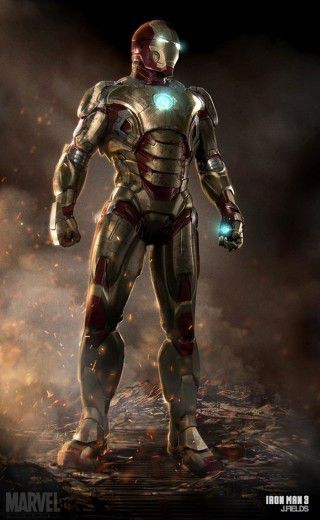

|  | 상품가격 | 12,300,000,000원 |
|---|---|---|
| 원산지 | 국내 | |
| Mk.41 아머 | 배송 | 무료 평균배송일 5.0일 |
| 후기 |   | |
아이언맨3의 간판수트이자 주력수트.
미완성된 수트인지라 제대로 쓸 수 있는 무기라곤 리펄서건 하나 뿐이며 제대로 날지도 못했었다.
이 수트로 하이잭 당한 대통령의 전용기에 타고 있던 사빈을 처치하기도 하고, 비행기에서 추락한 사람들을 구해내기도 한다. 하지만 그 후 날아가다가 교통사고를 당해 또 분해된다(…)
이때 부서졌던지라 최종전투에선 참여하지 못하다가 위기 상황에 다시 등장.
하지만 토니가 수트를 입기도 전에 난간에 부딪혀서 또 분해된다(…).
박살난 수트를 토니가 킬리언에게 입힌 후 자폭시켜버린다.
킬리언에게 일방적으로 털리기만 한 다른 수트들과는 달리 킬리언에게 치명상을 입히는 활약을 했다.
참고로 이 수트는 처음으로 착용할 때, 잠결에 실수로 불러서 토니가 부쉈을 때, 교통사고를 당했을 때, 최종보스 전에서 날아왔을 때까지 합쳐서 총 4번이나 조각조각 난다.